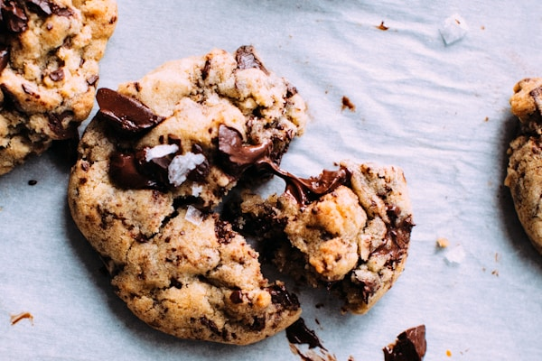

Recipe Details
Prep Time: 15 minutes
Cook Time: 12 minutes
Total Time: 27 minutes
Servings: 24 cookies
Difficulty: Easy
Ingredients
- 2¼ cups all-purpose flour
- 1 teaspoon baking soda
- 1 teaspoon salt
- 1 cup (2 sticks) unsalted butter, softened
- ¾ cup granulated sugar
- ¾ cup packed brown sugar
- 2 large eggs
- 2 teaspoons vanilla extract
- 2 cups (12 oz) semi-sweet chocolate chips
- 1 cup chopped walnuts or pecans (optional)
Instructions
- Preheat your oven to 375°F (190°C) and line baking sheets with parchment paper.
- Combine dry ingredients: In a small bowl, whisk together flour, baking soda, and salt. Set aside.
- Cream butter and sugars: In a large bowl, beat softened butter, granulated sugar, and brown sugar until light and fluffy (about 2-3 minutes).
- Add wet ingredients: Beat in eggs one at a time, then add vanilla extract and mix until well combined.
- Mix everything together: Gradually stir in the flour mixture until just combined, then fold in chocolate chips and nuts (if using).
- Drop rounded tablespoons of dough onto prepared baking sheets, spacing them about 2 inches apart.
- Bake for 10-12 minutes or until edges are golden brown. The centers may look slightly underdone—that's perfect!
- Cool on baking sheets for 2 minutes, then transfer to wire racks to cool completely.
Baker's Tips & Notes
- Room temperature ingredients: Make sure your butter and eggs are at room temperature for best results.
- Don't overmix: Once you add the flour, mix just until combined to keep cookies tender.
- Chill the dough: For thicker cookies, refrigerate the dough for 30 minutes before baking.
- Storage tip: Store cookies in an airtight container at room temperature for up to 5 days, or freeze for up to 3 months.
- Secret ingredient: Try adding a pinch of espresso powder to enhance the chocolate flavor!
Nutrition Facts
Per cookie (1 of 24):
- Calories: 190
- Total Fat: 10g
- Saturated Fat: 6g
- Cholesterol: 30mg
- Sodium: 140mg
- Total Carbohydrates: 24g
- Protein: 2g